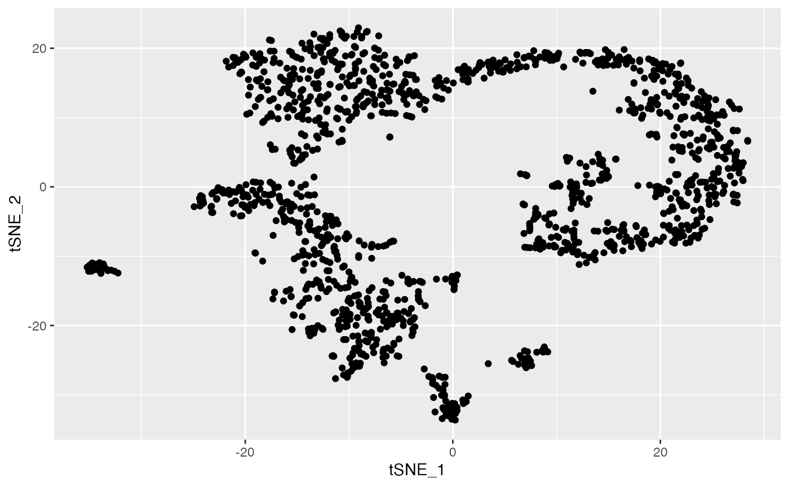
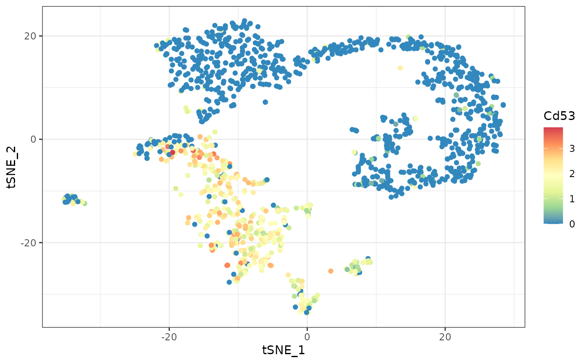
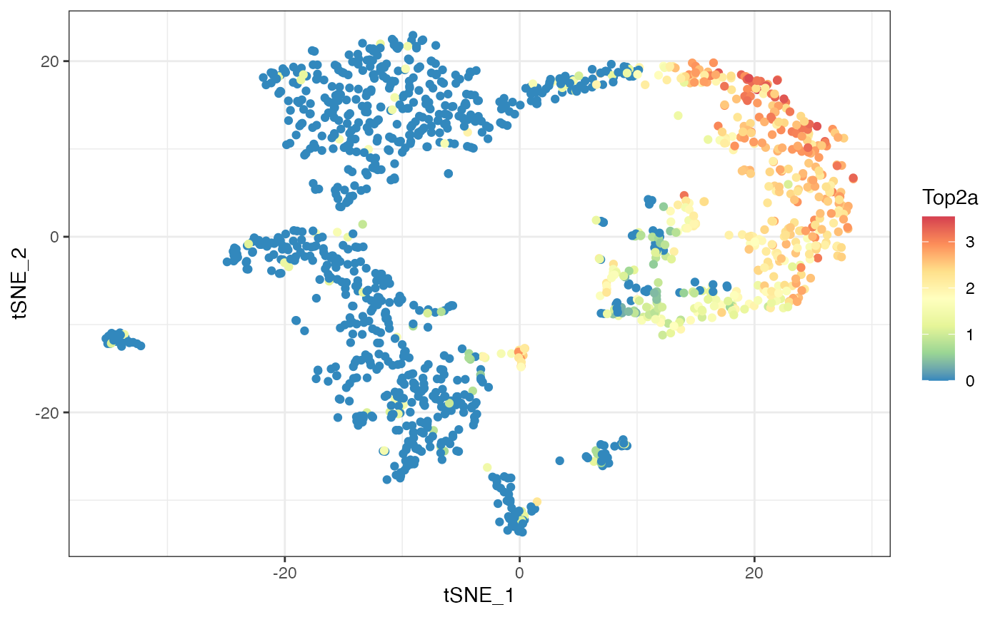
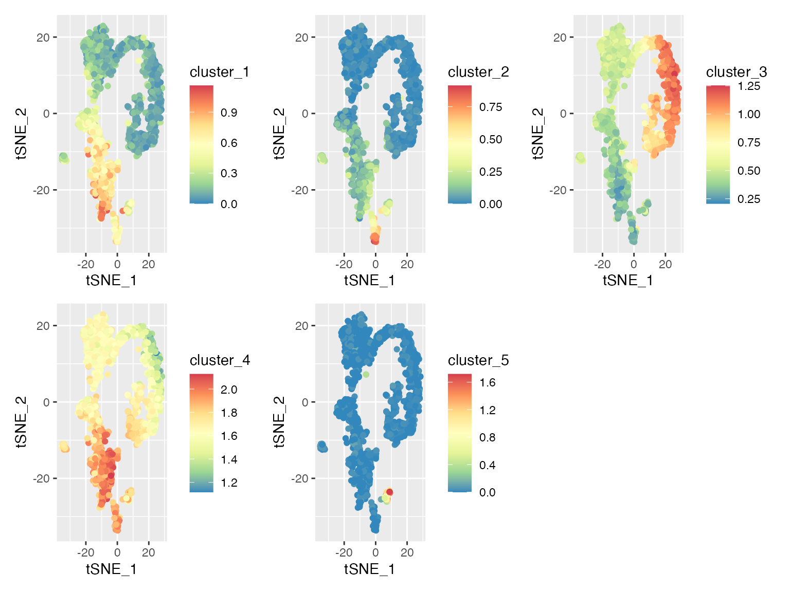

a02_example_scRNAseq.RmdIn this article, we show the application of
singleCellHaystack to predict differentially expressed
genes (DEGs) in a single-cell RNA-seq dataset. The input data is 1) the
gene expression data and 2) the coordinates of each cell in an input
space.
In this example, the gene expression data is an ordinary matrix
(genes versus cells), but a Seurat object (for example) could also be
used. The input space in this example will be the first principal
components of the cells. singleCellHaystack predicts DEGs
by looking at the “expression distribution” of a gene (i.e. the
distribution in the input space of cells that express a gene).
The data used in these examples can be found here.
We recommend downloading the .rda file and loading it using the
load() function. You can also download the individual data
files separately.
load(url("https://figshare.com/ndownloader/files/38094522"))
ls()
#> [1] "dat.expression" "dat.pca" "dat.tsne"This data should include the following objects:
dat.expression: a matrix object with the expression of
genes (rows) in each cell (columns).dat.pca: the output of PCA. This data.frame contains
the first 20 pricipal components (PCs).dat.tsne: a data.frame with t-SNE coordinates (2D)
based on the first 20 PCs.Let’s have a look at this example dataset:
# this data contains 10,537 genes and 1,429 cells
dim(dat.expression)
#> [1] 10537 1429
# visualizing the cells in a t-SNE plot:
ggplot(dat.tsne, aes(x = tSNE_1, y = tSNE_2)) + geom_point()
# the t-SNE coordinates are based on the 20 PCs
dim(dat.pca) # the PCA data contains 1,429 cells and 20 PCs
#> [1] 1429 20There are several groups of cells, although the borders between them
are not clear and several might consist of additional subclusters. We
can use singleCellHaystack to predict DEGs without relying
on grouping of the cells into arbitrary clusters.
haystack on multi-dimensional coordinates
First, load the package.
library(singleCellHaystack)Next, run haystack on the first 20 principal components.
We also give the expression data as input. This example dataset is
relatively small, containing 1,429 cells, so running ‘haystack’ should
take just 1 to 3 minutes to finish. We also set a random seed to ensure
replicability.
set.seed(123)
res.pc20 <- haystack(x = dat.pca, expression = dat.expression)
#> ### calling haystack_continuous_highD()...
#> ### Using package sparseMatrixStats to speed up statistics in sparse matrices.
#> ### Calculating row-wise mean and SD...
#> ### Filtered 0 genes with zero variance...
#> ### Using 100 randomizations...
#> ### Using 100 genes to randomize...
#> ### scaling input data...
#> ### deciding grid points...
#> ### calculating Kullback-Leibler divergences...
#> ### performing randomizations...
#> ### estimating p-values...
#> ### picking model for mean D_KL...
#> ### using natural splines
#> ### best RMSD : 0.035
#> ### best df : 5
#> ### picking model for stdev D_KL...
#> ### using natural splines
#> ### best RMSD : 0.032
#> ### best df : 10
#> ### returning result...Let’s have a look at the most significant DEGs. The gene with the
strongest differential expression is Cd53. We can plot the expression
and detection of this gene using the plot_gene_haystack
function. From the t-SNE plots we can see that Cd53 is expressed in
cells at the bottom left. In contrast, the expression of Top2a is
limited to a different subset of cells, on the right.
show_result_haystack(res.haystack = res.pc20, n = 10)
#> D_KL log.p.vals log.p.adj
#> Cd53 0.08172190 -64.78888 -60.76616
#> Shisa5 0.03972582 -62.84831 -58.82559
#> H2-K1 0.04427821 -60.10620 -56.08348
#> Gimap4 0.11147736 -52.47112 -48.44840
#> Ms4a4b 0.09291971 -50.40240 -46.37968
#> Top2a 0.03324626 -48.09147 -44.06875
#> Evl 0.05532307 -47.88664 -43.86392
#> 2810417H13Rik 0.02536247 -47.83085 -43.80813
#> Ifi27l2a 0.05388583 -47.82993 -43.80721
#> Ccnd2 0.10407929 -47.80352 -43.78081
# prepare a data.frame for plotting
d <- cbind(dat.tsne, t(dat.expression))
d[1:4, 1:4]
#> tSNE_1 tSNE_2 Mrpl15 Lypla1
#> 10X_P7_11_AAACCTGAGACAGGCT -10.461888 -11.4182096 2.0819393 0.0000000
#> 10X_P7_11_AAACCTGAGAGTCTGG 7.392279 -5.2816862 0.5902685 0.3380684
#> 10X_P7_11_AAACCTGCAGGAATGC -19.930710 0.3160883 0.0000000 0.0000000
#> 10X_P7_11_AAACCTGGTACCGTAT -16.321436 15.4128833 1.5215021 1.5215021
# plotting gene Cd53
ggplot(d, aes(tSNE_1, tSNE_2, color=Cd53)) +
geom_point() +
scale_color_distiller(palette="Spectral") +
theme_bw()
# plotting gene Top2a
ggplot(d, aes(tSNE_1, tSNE_2, color=Top2a)) +
geom_point() +
scale_color_distiller(palette="Spectral") +
theme_bw()
Next, let’s take the top 1000 DEGs, and cluster them by their
expression pattern in the input space (first 20 PCs). Here we use
hclust_haystack, which uses hierarchical clustering.
Alternatively, we could use kmeans_haystack for k-means
clustering.
# get the 1000 most significant DEGs, and cluster them by their distribution pattern in the 2D plot
sorted.table <- show_result_haystack(res.haystack = res.pc20, n = 1000)
gene.subset <- row.names(sorted.table)
# cluster the genes by their expression pattern in the input space using hierarchical clustering
res.hc <- hclust_haystack(dat.pca, dat.expression[gene.subset, ], grid.coordinates=res.pc20$info$grid.coordinates)
#> ### collecting density data...hclust_haystack returns as result a hclust
tree, which we can cut into clusters using the cutree
function. Here, we arbitrarily set the number of clusters to 5.
res.hc.clusters <- cutree(res.hc, k=5)
table(res.hc.clusters)
#> res.hc.clusters
#> 1 2 3 4 5
#> 88 90 605 188 29While some clusters contain hundreds of genes, others are quite small.
Next, let’s calculate the average expression of the genes in each cluster.
for (cluster in unique(res.hc.clusters)) {
d[[paste0("cluster_", cluster)]] <- colMeans(dat.expression[names(which(res.hc.clusters == cluster)), ])
}Let’s run through the 5 clusters and plot their averaged detection
pattern using plot_gene_set_haystack, which is similar to
plot_gene_haystack but uses a set of genes as input instead
of just 1 gene.
lapply(c("cluster_1", "cluster_2", "cluster_3", "cluster_4", "cluster_5"), function(cluster) {
ggplot(d, aes(tSNE_1, tSNE_2, color=.data[[cluster]])) +
geom_point() +
scale_color_distiller(palette="Spectral")
}) |> patchwork::wrap_plots() As we can see from these plots, each cluster has a distinct pattern. Some clusters have high expression over a broad range of cells, while cluster 5 is limited to a smaller subset.
res.hc.clusters["Cd53"]
#> Cd53
#> 1The most significant DEG, Cd53, was clustered into cluster 1. Comparing its expression pattern (see above) with that of each cluster, we can indeed see that it fits most closely with that cluster.